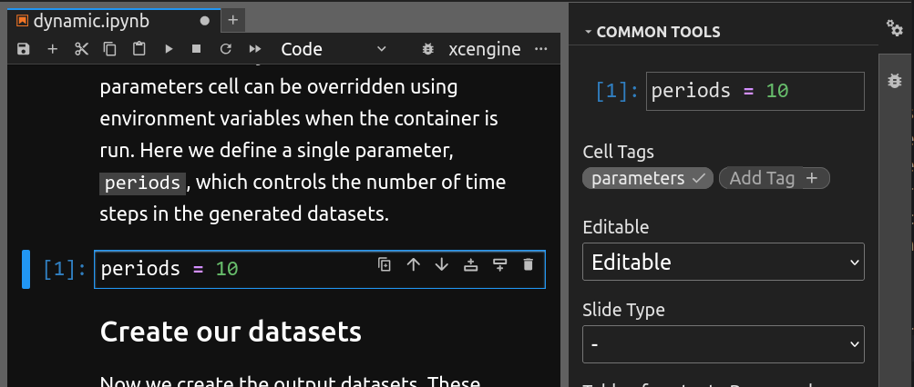

Making a Jupyter notebook xcengine-compatible
xcengine is designed to require as little alteration as possible to a Python notebook, but some configuration may be necessary, in particular to define input parameters.
Configuring input parameters
An Application Package can have, and usually does have, input parameters defined types and default values, which can be set by the caller when running the package. xcengine automatically generates these parameters from variables in the notebook. Any variable to be used as a parameter must be defined in the parameters cell of the notebook. You can only have one parameters cell in a notebook, and it is strongly advised that the parameters cell appear as early as possible in the notebook.
You turn a normal code cell into a parameters cell by adding a tag called parameters to it in Jupyter Lab using the Property Inspector. (The Property Inspector can be opened by clicking the gear icon at the top right of the Jupyter Lab window.)

You can define as many parameters as you like in the property cell. The values you assign to them will be used as the default values for these parameters when xcengine generates the Application Package.
This tagging convention is similar to the one used by papermill.
Configuring xcengine
As well as parameters, the parameters cell can contain an xcengine
configuration dictionary. This is a Python dictionary with the special
name xcengine_config. Available configuration settings are:
workflow_id: a string identifier for the workflow in your Application Package. The runner or Application Package platform can use this identifier to refer to you Application Package. By default, the name of the notebook (without the.ipynbsuffix) is used.environment_file: the name of a YAML file defining a conda environment (these are often calledenvironment.yml). If an environment file is not specified in the notebook or on the command line, xcetool will try to deduce the environment automatically. This cannot be done 100% reliably, so it is strongly recommended to provide an environment file.container_image_tag: the tag applied to the Docker container image that xcengine builds. If you plan to push the image to a public registry, you can enter the final registry tag here and push the image once it's been built by xcengine. If no tag is specified, xcengine will create one based on the current date and time.
Some of these configuration settings can also be set on the command line.
Dataset output
Selecting datasets for output
No additional code or configuration is needed for datasets to be written from
Application Packages or served when the container image is run in xcube
Server/Viewer mode. xcengine will automatically output or serve any instance
of xarray.DataSet which is in scope when the notebook's code has finished
executing. If you're created some datasets which you don't wish to be
written, you can use the Python
del statement
to delete them at the end of the notebook to remove them, e.g.
del my_temporary_dataset
Setting dataset output type
By default, all xarray.DataSet instances are written as Zarr. But you can
force them to be written as NetCDF by setting an attribute on the dataset,
like this:
my_dataset.attrs["xcengine_output_format"] = "netcdf"